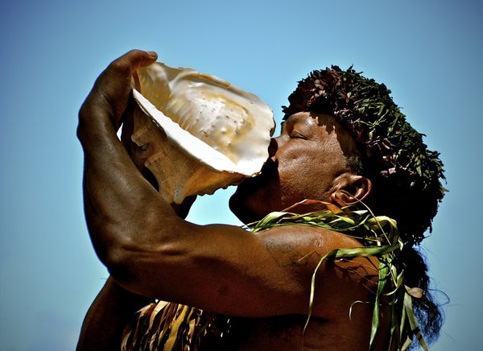

This is the Main Page, hope it looks good!

Here is some Hawaiian History.
Hawaii (Listeni/h?'wa?.i?/ or /h?'wa??i?/; Hawaiian: Hawai?i Hawaiian pronunciation: [h?'v?i?i]) is the most recent of the 50 U.S. states (joined the Union on August 21, 1959), and is the only U.S. state made up entirely of islands. It is the northernmost island group in Polynesia, occupying most of an archipelago in the central Pacific Ocean.
Hawaii's diverse natural scenery, warm tropical climate, abundance of public beaches, oceanic surroundings, and active volcanoes make it a popular destination for tourists, (wind) surfers, biologists, and volcanologists alike. Due to its mid-Pacific location, Hawaii has many North American and Asian influences along with its own vibrant native culture. Hawaii has over a million permanent residents along with many visitors and U.S. military personnel. Its capital is Honolulu on the island of O?ahu.
The state encompasses nearly the entire volcanic Hawaiian Island chain, which comprises hundreds of islands spread over 1,500 miles (2,400 km). At the southeastern end of the archipelago, the eight "main islands" are (from the northwest to southeast) Ni?ihau, Kaua?i, O?ahu, Moloka?i, Lana?i, Kaho?olawe, Maui and the island of Hawai?i. The last is the largest and is often called "The Big Island" to avoid confusing the name of the island with the name of the state as a whole. The archipelago is physiographically and ethnologically part of the Polynesian subregion of Oceania.
Hawaii is the 8th smallest, the 11th least populous, but the 13th most densely populated of the 50 U.S. states. Hawaii's ocean coastline is approximately 750 miles (1,210 km) long, which is fourth in the United States after those of Alaska, Florida and California.
Hawaii is one of two states that do not observe daylight saving time, the other being Arizona. It is also one of two states that are not in the contiguous United States; the other is Alaska. Additionally, Hawaii is the only U.S. state not to be located in the Americas. Hawaii is also the only state with an Asian plurality.